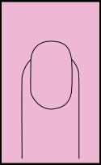
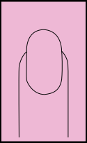
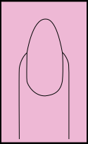
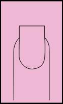
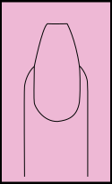
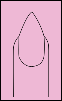

redonda
La forma redonda se consigue siguiendo la forma natural del dedo y limando los bordes de la uña de manera redondeada. Estamos hablando de la forma más común y cómoda para tu uña ya que evitarás las roturas y los enganchones. Si tienes los dedos gruesos, esta es la forma adecuada para tí, siempre cuidando el largo de la uña sin excederse.
ovalada
Esta forma es la más elegante y femenina, se consigue limando la punta de la uña en forma de huevo y siempre hacia los lados. También es muy cómoda, igual que la forma redonda ya que evitaras bastante la rotura de la uña. La forma ovalada es perfecta para ti si tienes los dedos cortos.
almendrada
Esta forma se consigue limando los laterales de la uña hacia los lados y redondeando la punta. Si tus uñas son débiles y quebradizas debes evitar esta forma, ya que no es muy resistente. La forma almendrada es perfecta para ti si tienes los dedos cortos, estilizará mucho más tu mano, con una longitud media será suficiente, ya que si las dejas demasiado largas, las uñas pueden quedar descompensadas con respecto a los dedos.
cuadrada
La forma cuadrada se consigue limando en recto los laterales de la uña y dejándola completamente sin punta, en línea recta. Si tienes los dedos largos y finos esta es tu forma adecuada. Con la forma cuadrada tendrás que tener mucho más cuidado con tus uñas, ya que un golpe tonto puede partir la esquina de la uña.
ballerina
Esta forma no es de las más usuales, pero sí de las más bonitas, se consigue limando la uña de forma almendrada, pero dejando la punta recta. Son ideales para llevarlas con una buena longitud, si no quieres una manicura con mucha longitud, esta no es tu forma, ya que con una longitud menor, hará que tus dedos parezcan más gruesos y cortos.
stiletto
Sin duda alguna, esta sería la forma más atrevida y la que la Rosalía (tra-tra) ha puesto tanto de moda. Se consigue limando la uña con forma cuadrada y después limando los laterales formando una punta en el centro de la uña. Esta forma al igual que la ballerina queda más vistosa con una mayor longitud, pero si las uñas largas y atrevidas no es lo tuyo, mejor que optes por otra forma.